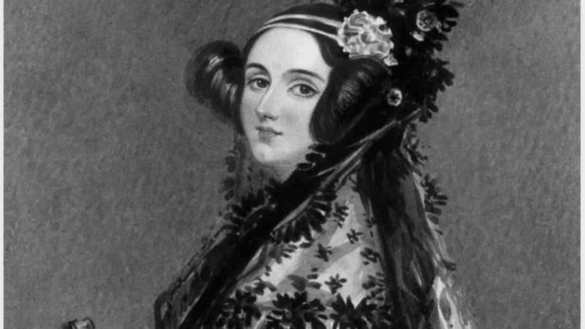
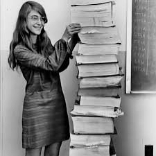
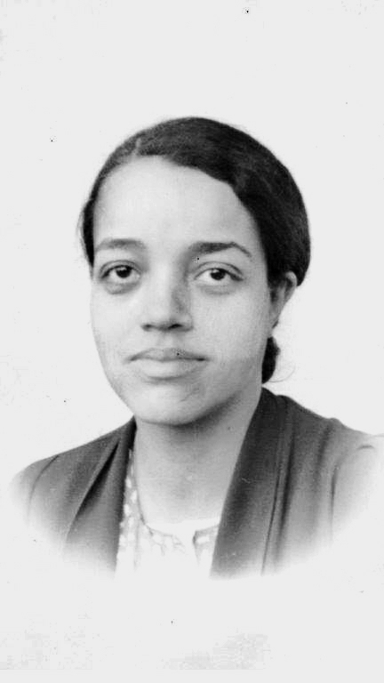
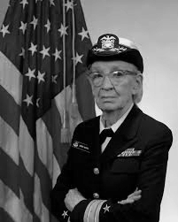
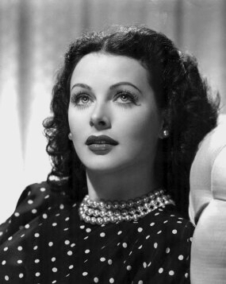

Serei uma futura programadora! Amo fazer arte e ensinar.

Poque a primeira programadora do mundo foi uma mulher: Ada Lovelace

Poque uma mulher desenvolveu o programa de vôo para pousar na lua: Margareth Hamilton

Quem nunca sonhou em ser programadora na NASA? Dorothy Vaughan conseguiu há 68 anos atrás.

Poque Grace Hopper criou a linguagem base que usam até hoje.

Poque quem inventou a base para wifi foi uma mulher: Hedy Lamarr